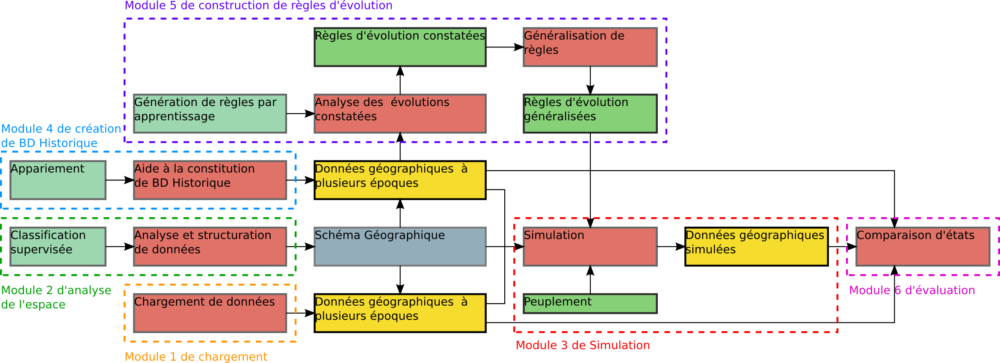

Présentation
Articles de cette rubrique
-
Les objectifs du projet GeOpenSim
Plate-forme Géographique OpenSource de Simulation.
L’objectif de ce projet de recherche est de concevoir une nouvelle plate-forme OpenSource dédiée à l’analyse des tissus urbains qui disposerait des caractéristiques suivantes :
# une représentation vectorielle et multi-niveaux de l’information géographique apte à décrire les tissus urbains,
# des mécanismes permettant de simuler des évolutions du tissu urbain en se basant sur une représentation d’agents géographiques vectoriels et sur des mécanismes de croissances et de dépendances fonctionnelles,
# une bibliothèque d’algorithmes -composée d’algorithmes d’analyse et d’agrégats et d’algorithmes d’apprentissage- permettant d’enrichir la description de l’espace.Cette plate-forme a pour objectif à terme d’appréhender, d’analyser et d’anticiper– grâce aux mécanismes de simulation - l’impact de la forme de la ville sur les dynamiques urbaines (croissance, renouvellement…) et inversement l’impact de décisions politiques ou de projets d’urbanisme et d’aménagement sur la forme de la ville. De plus la plate-forme conçue comme un outil OpenSource permettra le développement de collaborations entre chercheurs francophones dans le domaine de la géomatique. En effet, des échanges fructueux devraient être établis à partir de l’utilisation d’un outil commun portant sur les objets géographiques.
-
Les modules du projet GeOpenSim
Le projet est organisé en 6 modules :
* Le module 1 de chargement des données géographiques
* Le module 2 d’analyse de l’espace
* Le module 3 de simulation
* Le module 4 de création de bases de données historiques
* Le module 5 de construction de règles d’évolution
* Le module 6 d’évaluation des résultats de simulation
-
Séminaire de clôture du projet GeOpenSim
Vendredi 8 avril 2011
ENSG, Marne la Vallée
Amphithéatre Picard, de 9h30 à 13h
Programme :
* présentation du projet (objectifs, verrous scientifiques, composants du modèle)
* caractérisation de l’espace pour l’analyse (classification automatique des îlots)
* méthodes de densification
* simulation (principes et démonstration)
* conclusion, table rondeParticipation gratuite sur inscription avant le 25 mars 2011.
Contact : anne.ruas@ign.fr